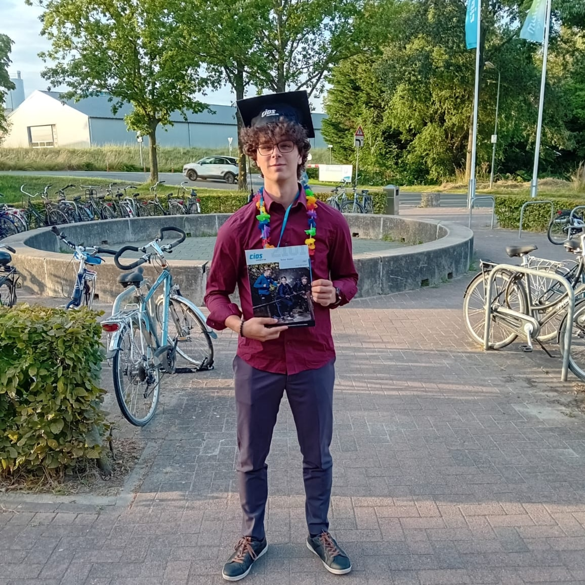
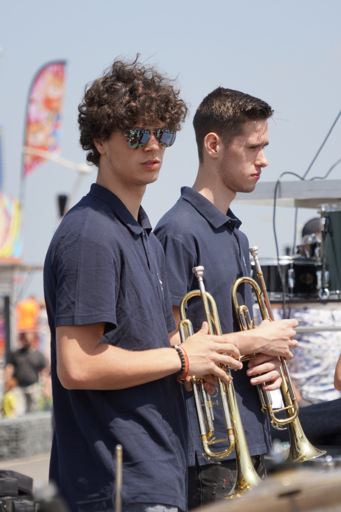

Persoonlijke informatie Hierbij krijgt u wat meer informatie over mij en kan u mij leren kennen. Ik ben Renzo Debeer 19 jaar en ben geboren in Rumst (Belgie). Ik ben opgegeroeid in de gemeenten Hemiksen en heb hier tot mijn 13 jaar gewoond. Ik heb daardoor mijn middelbaar 2 jaar in Belgie gedaan. Waarbij ik de opleiding S.T.E.M. (science, technology, engineering en mathematics) heb gevolgd en de opleding mechanica en elektriciteit. Mijn laatste 2 jaar van het middelbaar heb ik Nederland gedaan. Dit komt omdat we ervoor hebben gekozen om naar Nederland te verhuizen toen ik 13 jaar was. Hierbij heb ik dan 2 jaar op het lodewijkcollege gezeten waarbij ik mijn MAVO diploma heb gehaald. Nadat ik mijn diploma had gehaald heb ik ervoor gekozen om verder te gaan studeren aan het CIOS. Hierbij heb ik mij dan gesepcialiseerd als voetbaltrainer en het keuzendeel sportverzorger en hersteltrainer. Nadat ik 3 jaar daar op school heb gezeten heb ik mijn diploma vorig jaar behaald. In mijn laatste jaar ben ik dan gaan nadenken wat ik nu als volgende stap zou willen doen en heb ik ervoor gekozen om mijn huidige opleiding ICT binnen de HZ te volgen. Verder woon ik momenteel nog thuis samen met mijn ouders en zusje van 16 bijna 17 jaar. Verder hebben we momenteel 1 hond en 1 kat.  Extra-curricular activities BIJBAAN EN VRIJE TIJD In mijn vrije tijd speel ik voetbal bij Terneuzense Boys waarbij ik in het 3e team speel. Hierbij trainen we op dinsdag en donderdag avond indien er genoeg mensen aanwezig zijn. Dit komt doordat dit team bestaat uit studenten die dus niet altijd zo makkelijk heen en weer kunnen reizen om 1,5 uur te trainen. Verder speel ik ook graag muziek waarbij ik momenteel trompet speel in een orkest. Hiervoor heb ik dan een jaaryje trompet les gevolgd waarbij ik ook in hetzelfde orkest speel. In Belgie heb ik ook nog 3 jaar muziekschool gevolgd waarbij ik het instrument hobo heb gespeeld waarvan ik 2 jaar in een jeugdorkest heb gespeeld. Verder heb ik vroeger nog 1 jaar zwemlessen gevolgd en 7/8 jaar op turnen gezeten. 